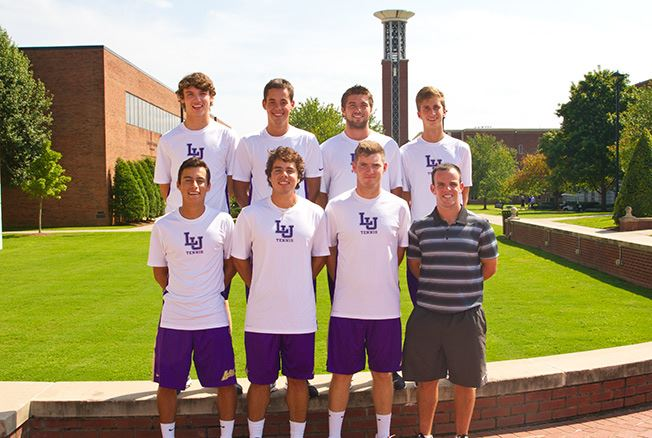
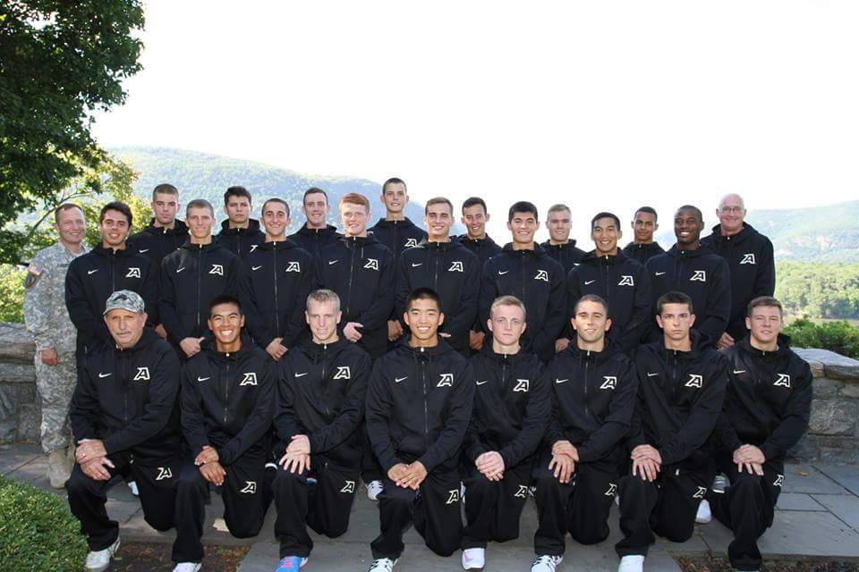

As a Lipscomb University graduate, not only was I a scholarly student, I was also a student athlete and team captain that competed at an NCAA Division 1 level for tennis. I did not graduate with a normal 136-hour accounting degree. During my four years at Lipscomb, I graduated with 150 hours with post graduate level accounting courses and with extensive courses in Spanish. A typical student will complete this in five years or more. During my last year at Lipscomb, I also filed over 100 tax returns during the tax season as a volunteer income tax assistant for United Way. As a volunteer for United Way, I was fortunate enough to be able to communicate with customers from various demographic backgrounds and cultures all while making them understand how and why their government allocated their tax return. My time management was impeccable not only because I was disciplined, but also because I was passionate about learning any topic related to finance and accounting.
During my academic years of 2011-2012 and 2013-2014 at Lipscomb University, I was on the Provost Honors list, which a list that recognizes students for outstanding academic achievement. The Provost Honors list mentions that I received a letter grade of an “A” for core business classes such as Managerial Accounting, Business Statistics, Governmental and Non-Profit Accounting, International Business, Principles of Finance, Business Policy and Strategy and other elective classes. While at Lipscomb University, I was also a member of the Accounting and Finance society. As a member of the society, I would attend meetings to gain more knowledge about the industry and prepare for a career. I would also network with professionals in the Accounting and Finance industry and learn from their experience.
Prior to Lipscomb University, as a high school student, I also attended South Texas College to take college level courses that were accredited to my transcripts for Lipscomb. Courses such as Principles of Biology: Cell and Genetics, Principles of Micro Economics and Integrated Software Application. These college level course helped me for the preparation and transition from a high school student to a college student at an early age. The Software application class gave extensive lectures and projects for better grasping my understanding for Microsoft Word, Excel, Power Point and even Access. This made the difference because I had a better comprehension for the work load that was yet to come using these particular applications.
Upon graduating from Lipscomb University, I moved to New York to continue my other passion of tennis. I became the men’s assistant tennis coach at The United States Military Academy at West Point, which is an institution where they teach cadets discipline and how to become exceptional leaders in the United States. I learned and acquired skills that I would not have been able to learn in a classroom. As a coach, I learned how to lead and most importantly to communicate with the players. Communication is an essential but vital attribute a person can have.
After my one-year tenure at West Point, I had an opportunity to attend Durham University, ranked #61 University in QS World Rankings 2015, to pursue my Masters in Finance Management with a full-scholarship. I took several modules that help me better understand how to value a company or an individual, such as, Corporate Finance, Financial Planning and Control, Mergers and Acquisitions, and Financial Managing. Above everything, I am excellent in working with groups. I have been playing or coaching for a team for the past six years. At Durham, our seminars are designed to practice working on teams and developing many excel projects while appropriately allocating the work within the group. I am fluent in English, Spanish, and currently learning Russian. I received a merit score on my dissertation titled: “The Aftermarket Performance of Initial Public Offerings in Taiwan: Before and After the 2008 Global Financial Crisis.” I was offered a position at N+1 Singer in the United Kingdom as a market maker but unfortunately, due to the unforeseen vote for Brexit, the position was unavailable since the vote heavily affected the financial market in the U.K.
I got hired as a Financial Advisor at Edward Jones and have found success fast but it is not fulfilling me. As much as I love wealth management, I was bound by guidelines and unbeknownst to me, I took over an office with existing problems. I love working at a fast-past environment and I have the ability to make quick educated decisions. I am very teachable and can pick up new strategy techniques rapidly. I always have goals and objectives that I continually strive for. I always keep up to date with financial markets and find creative opportunities on how to invest. Although my current is not as fulfilling, I learned how to have a do or die mindset. Most importantly, I improved my communications skills tenfold!
I have always had an interest in programming and web development but never thought I could get a job in it due to my undergraduate and graduate degree. I taught myself how to build my own website for my own financial advisory business and fell in-love doing so. I slowly started building my own projects as well as projects for friends and family members. My goal is to code and learn something new every day until I get the chance to be a full-stack web developer.